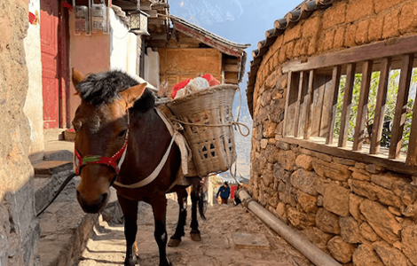
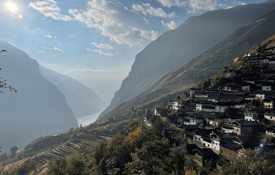
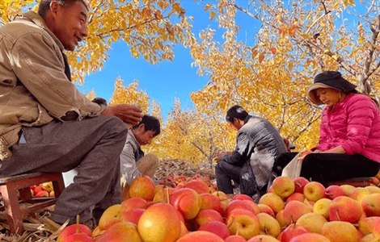
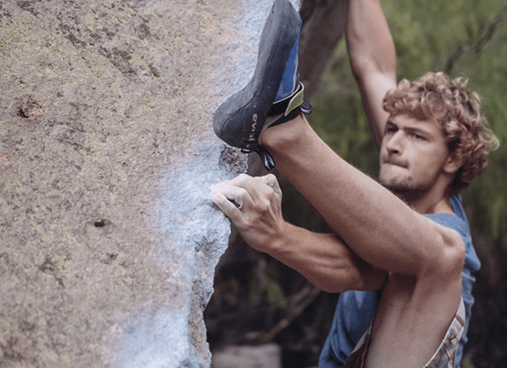
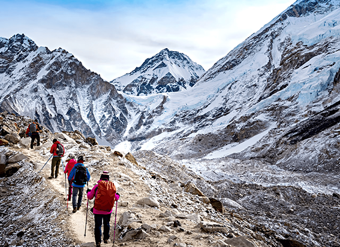
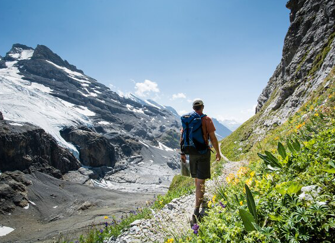

NATIONAL GEOGRAPHIC
In this part of China, hands not machines define the rhythm of life
HISTORY & CULTURE
- 
- 
- 
Watch them till the soil. How often have they done this chore? A thousand times? Ten thousand? More? Yet they are incapable of consistency. Over the course of their working life, they will never swing a hoe the same way twice. Or study the fingers of the rattan weaver: His baskets are saved from idiot sameness by tiny, beautiful human errors. Or the big, meaty hands of the stone-setters the village masons building simple houses that are actually habitable sculptures: each wall and corner unique, and never quite plumb. Such confident hands. Clever hands. Wise hands, even. Hands that perform everyday tasks with a certain authority, a kind of ineffable power.
I am walking across Yunnan besotted by a strange, lopsided, handcrafted world.
Why strange?
Because this is 21st century China: a clichéd panorama of hyperactive megacities, punctual bullet trains, over-lit malls, and hi-tech ports—the famed “factory of the world.” An economy whose tireless conveyor belts satisfy humanity’s vast demand for cell phones, plastic toys, solar panels, clothing, and countless other articles of industrial mass production.
Yet in the scarps and valleys of western Yunnan Province, bordering Myanmar and Tibet, a startlingly different Middle Kingdom abides: a stronghold of manual, artisanal trades. A cosmos of makeshift villages and crooked roads.
“It’s too steep here for industrial farming,” says Shen Jisheng, who hand-plants corn and potatoes atop a piney ridgetop hamlet called Songpo. “So everything we do is organic.”
Shen isn’t exaggerating. His fertilizer is a homemade concoction of pine needles and pig waste. A hand-carved wooden stick functions as a corn de-grainer. Hand woven shoulder baskets hold his harvests. Even Shen’s small fields defy the rigid geometries imposed by the mechanical world: They’re irregular, amoeboid, lobed.
“We buy our baijiu from the town,” allows Shen’s wife, Wang Liusui, referring to an often mass-produced booze in China that numbs the lips on contact.
Cooking on a wood-fired stove, Wang’s meals include wild forest products such as fried ferns.
A shield of mountain walls only partly explains why western Yunnan has largely escaped the tsunami of industrialization enveloping much of the rest of China. The region’s old lifeways also are likely preserved by its complex mosaic of ethnic minorities. Historically less well off than the dominant Han majority, groups like the Lisu, Mosuo, Naxi, and Yi often cling to antique rural pursuits.
On a three-month foot ramble through Yunnan’s lumpy backcountry, starting near Tengchong, hard by the Myanmar border, and hiking more than 500 miles to a popular tourist city called Lijiang in the north, I have encountered such a boggling array of medieval occupations that I’ve begun keeping a list.
But there are also roving aluminum pot menders in the Gaoligong Mountains, walnut oil pressers in Lujiang, eucalyptus oil distillers along the Nu River, and chili grinders pounding out their red wares around Dali. I met basket makers, mule packers, wild mushroom pickers, backyard textile weavers, and axmen who specialize in hewing beehives from hollowed-out trees. It’s been a pleasure somehow comforting to traverse the slower, more human-scaled world they've built.
Do not romanticize poverty. Do not exoticize underdevelopment. Do not indulge in naïve fantasies about the hardships of preindustrial life. Yet surely the bigger fantasy is believing that humankind’s mass-produced economy, as configured today, is anywhere near sustainable.
“Ten years ago, I had 10 mules, and now I have only two,” said Luo Shi Ming, an aging mule driver who helped lug my gear over the yo-yoing trails of Cang Mountain, in western Yunnan.
Luo had made good money hauling modern construction equipment and bags of cement into his once isolated region. Those cargoes put his caravan trade out of business. The cement helped build new roads. Some of his retired mules, Luo told me wistfully, had been smarter than people.
Comments :
- john Very good
- john Very good
Leave a Reply
Your email address will not be published. Required fields are marked*
Related posts:
-
Rock climbing is getting more popular and that concerns conservationists
Even before climbing star Alex Honnold’s stunning “free solo” ascent of Yosemite’s El Capitan in 2017, rock climbing was gaining a foothold. Now, with its debut at this year’s Tokyo Olympics, the once niche sport is set to reach new heights.
View article -
Will the pandemic crush Nepal’s trekking industry
Three vertical miles above the Indian Ocean, eight days by foot from the nearest road, the hamlet of Dzongla sits in a windswept, snow-streaked pass beneath Mount Everest. On either side, Lobuche peak
View article -
6 hiking and biking trails to explore in the Alps this summer
There’s always something afoot at the resort of Laax. In winter, skiers leap off any pipe, rail or lump they can find, having honed their skills at the indoor Freeride Center; in summer, it’s bikers on the Segnes Trail
View article